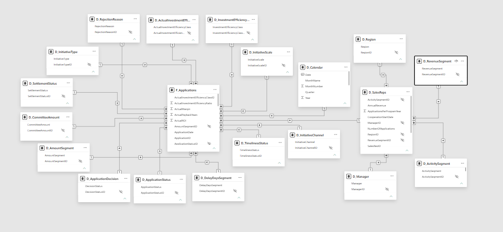

Analiza efektywności programu dofinansowań marketingowych
Power BIPower QueryDAXETLModel danychRaport interaktywny
Interaktywny raport Power BI pokazujący efektywność programu dofinansowań marketingowych z perspektywy zarządczej. Projekt analizuje przyznane środki, marżę, zwrot z inwestycji, okres zwrotu, wyniki regionów i przedstawicieli oraz ryzyka związane z rozliczeniami.
Przygotowałam dane w Power Query w procesie ETL, a następnie zbudowałam model danych w układzie płatka śniegu, miary DAX oraz pięciostronicowy raport zarządczy.
Jeżeli raport nie wyświetla się w tym miejscu, otwórz wersję interaktywną w nowej karcie. Otwórz raport interaktywny
1Problem i cel projektu
W organizacji posiadającej sieć sprzedaży lub sieć partnerów biznesowych proces przyznawania dofinansowań marketingowych może obejmować wiele wniosków, przedstawicieli, regionów, typów inicjatyw i budżetów. Sama informacja o liczbie zaakceptowanych wniosków lub wysokości przyznanych środków nie wystarcza do oceny, czy program przynosi oczekiwany efekt biznesowy.
Celem projektu było przygotowanie raportu, który pozwala odpowiedzieć na pytania:
czy program dofinansowań generuje dodatnią marżę,
które typy inicjatyw są najbardziej efektywne,
które regiony i zespoły osiągają najlepsze wyniki,
jak wygląda relacja między przyznanym dofinansowaniem a marżą,
gdzie pojawiają się opóźnienia w rozliczeniach,
jaka część środków pozostaje nierozliczona,
które obszary wymagają dalszej kontroli lub zmiany alokacji budżetu.
Przygotowałam raport jako narzędzie zarządcze. Jego celem nie jest obsługa pojedynczego wniosku, ale ocena całego programu i wsparcie decyzji dotyczących dalszego finansowania działań marketingowych.
2Dane
Przygotowałam dane specjalnie na potrzeby projektu portfolio. Są to dane fikcyjne, inspirowane realnym procesem biznesowym. Wszelka zbieżność danych osobowych, wartości lub sytuacji biznesowych jest przypadkowa.
Zakres danych obejmuje:
wnioski o dofinansowanie działań marketingowych,
kwoty wnioskowane i przyznane,
prognozowaną i rzeczywistą marżę,
statusy decyzji,
statusy rozliczeń, terminy rozliczeń i opóźnienia,
przedstawicieli sprzedaży, menedżerów i regiony,
typy inicjatyw, kanały działań i segmenty,
klasy efektywności inwestycji.
Przygotowałam dane tak, aby umożliwiały analizę na kilku poziomach: całego programu, regionu, menedżera, przedstawiciela oraz pojedynczego wniosku.
3Model danych
Zbudowałam model danych w układzie płatka śniegu. Centralną tabelą modelu jest tabela faktów F_Applications, w której jeden wiersz odpowiada jednemu wnioskowi o dofinansowanie.
Bezpośrednio z tabelą faktów połączone są wymiary opisujące wnioski, statusy, inicjatywy, kanały, segmenty oraz kalendarz. Dodatkowo tabela przedstawicieli sprzedaży jest połączona z wymiarami organizacyjnymi, takimi jak region, menedżer, segment aktywności i segment przychodu. Dzięki temu model nie jest prostą gwiazdą, ale strukturą płatka śniegu.

../images/projects/project2-data-model.png
Zdjęcie 1. Model danych w układzie płatka śniegu, oparty na centralnej tabeli faktów F_Applications.
Taki układ pozwala analizować dane zarówno na poziomie pojedynczego wniosku, jak i na poziomie regionu, menedżera, przedstawiciela oraz całego programu.
4Przygotowanie danych
Przygotowałam dane w Power Query w procesie ETL, czyli pobrania, przekształcenia i załadowania danych do modelu raportowego.
W ramach przygotowania danych wykonałam następujące kroki:
zaimportowałam dane źródłowe,
utworzyłam warstwę zapytań pomocniczych,
oczyściłam i ujednoliciłam nazwy kolumn,
sprawdziłam typy danych,
usunęłam zbędne pola techniczne,
połączyłam dane wniosków z danymi rozliczeń,
przygotowałam tabelę faktów i tabele wymiarów,
usunęłam duplikaty w wymiarach,
dodałam identyfikatory techniczne dla wybranych wymiarów,
uporządkowałam statusy, segmenty i klasy efektywności,
przygotowałam dane do modelowania i raportowania.
Ważnym założeniem było rozdzielenie etapu przygotowania danych od etapu analizy. Najpierw oczyściłam i ustrukturyzowałam dane w Power Query, a dopiero później wykorzystałam je w modelu danych i miarach DAX.
5Struktura raportu
Raport składa się z pięciu stron analitycznych.
Executive Overview
Strona główna raportu pokazuje ogólny obraz programu. Zawiera najważniejsze wskaźniki: przyznane dofinansowanie, marżę, wnioski jeszcze niewymagające rozliczenia, liczbę wniosków, zwrot z inwestycji, okres zwrotu i poziom akceptacji. Strona pozwala szybko ocenić kondycję programu oraz wskazać obszary, które wymagają dalszej analizy.
Zdjęcie 2. Executive Overview — ogólny obraz programu.
Program Profitability
Strona koncentruje się na opłacalności programu. Pokazuje porównanie prognozowanej i rzeczywistej marży, relację między dofinansowaniem a marżą, odchylenia marży oraz zmianę wskaźników opłacalności w czasie.
Wskaźniki opłacalności są liczone dla wniosków dojrzałych do oceny, czyli takich, których termin rozliczenia już minął. Zgodnie z założeniami programu przedstawiciele mają 12 miesięcy od otrzymania dofinansowania na rozliczenie efektów działań marketingowych. Wnioski, które nie osiągnęły jeszcze tego terminu, nie są uwzględniane w głównych wskaźnikach opłacalności, aby nie zaniżać wyniku programu.
Zdjęcie 3. Program Profitability — opłacalność programu.
Initiative & Channel Effectiveness
Strona porównuje efektywność typów inicjatyw marketingowych i kanałów. Pokazuje, które działania generują najwyższą marżę, jak zmieniają się wyniki w czasie oraz jak wygląda relacja między dofinansowaniem a marżą dla poszczególnych typów inicjatyw.
Ta część raportu wspiera decyzje dotyczące tego, które działania warto rozwijać, a które wymagają dalszej analizy.
Strona pokazuje wyniki według regionów, menedżerów i przedstawicieli sprzedaży. Zawiera analizę dofinansowania, marży, zwrotu z inwestycji, efektywności inwestycji i okresu zwrotu.
W raporcie zastosowałam analizę od ogółu do szczegółu: od poziomu regionu, przez menedżera i przedstawiciela, aż do pojedynczego wniosku.
Zdjęcie 5. Regional & Sales Representative Performance — wyniki regionów i przedstawicieli.
Settlement & Risk Overview
Strona analizuje statusy rozliczeń i ryzyka operacyjne. Pokazuje kwoty nierozliczone, kwoty po terminie, średnie opóźnienia, statusy rozliczeń oraz listę wniosków wymagających dalszej kontroli.
Ta część raportu pozwala szybko zidentyfikować obszary, w których środki zostały przyznane, ale rozliczenie nie zostało zakończone lub pojawiło się opóźnienie.
Poziom akceptacji (Approval Rate) — udział zaakceptowanych wniosków w liczbie wszystkich wniosków.
Poziom rozliczenia (Settlement Completion Rate) — udział rozliczonych wniosków w liczbie zaakceptowanych wniosków.
Poziom opóźnień (Overdue Rate) — udział wniosków opóźnionych w liczbie zaakceptowanych wniosków.
Kwota nierozliczona (Unsettled Amount) — suma przyznanych środków, które nie zostały jeszcze rozliczone.
Kwota po terminie (Overdue Amount) — suma przyznanych środków związanych z wnioskami opóźnionymi.
Wskaźniki opłacalności, takie jak zwrot z inwestycji, okres zwrotu i wskaźnik efektywności inwestycji, są liczone dla wniosków dojrzałych do oceny. Oznacza to, że obejmują wnioski, dla których minął 12-miesięczny okres przewidziany na rozliczenie efektów działań marketingowych.
7Wnioski techniczne
Projekt pokazuje pełny proces przygotowania raportu Power BI: od danych źródłowych, przez przygotowanie danych, modelowanie, obliczenia, aż po interaktywną wizualizację.
Najważniejsze wnioski techniczne:
Power Query dobrze sprawdza się jako warstwa ETL, ponieważ pozwala oddzielić dane źródłowe od danych gotowych do modelowania.
Model w układzie płatka śniegu pozwala zachować przejrzystość przy rozbudowanej strukturze organizacyjnej.
Tabela faktów F_Applications umożliwia analizę na poziomie pojedynczego wniosku, a wymiary pozwalają filtrować dane według regionów, menedżerów, typów inicjatyw i statusów.
Tabela kalendarza przygotowana w DAX umożliwia analizę wyników w czasie, w szczególności po latach i kwartałach.
Miary DAX pozwalają liczyć wskaźniki dynamicznie, zgodnie z wybranymi filtrami.
Wskaźniki opłacalności powinny być liczone konsekwentnie według tej samej logiki, aby uniknąć sprzecznych wyników na różnych stronach raportu.
W raporcie warto oddzielać wskaźniki opisujące efektywność programu od wskaźników opisujących ryzyko rozliczeniowe. Oznacza to, że ROI, Payback i Eff. Ratio oceniają opłacalność programu, a Overdue, Unsettled Amount i Delay Days pokazują ryzyko rozliczeniowe.
Interaktywne filtry i analiza od ogółu do szczegółu zwiększają użyteczność raportu dla odbiorcy biznesowego.
8Wnioski biznesowe
Na podstawie raportu można wskazać kilka kluczowych wniosków biznesowych.
Po pierwsze, ocena programu nie powinna opierać się wyłącznie na liczbie wniosków lub wysokości przyznanego budżetu. Duża liczba wniosków nie oznacza automatycznie wysokiej efektywności, jeśli nie przekłada się na marżę i zwrot z inwestycji.
Po drugie, typy inicjatyw marketingowych różnią się efektywnością. Część działań generuje wysoką marżę i korzystny zwrot z inwestycji, natomiast inne wymagają dokładniejszej kontroli lub zmiany zasad finansowania.
Po trzecie, wyniki regionalne nie są równomierne. Raport pozwala porównać regiony, menedżerów i przedstawicieli sprzedaży, a następnie przejść do poziomu pojedynczego wniosku, aby sprawdzić źródło wyniku.
Po czwarte, część środków może pozostawać nierozliczona lub opóźniona. Nawet jeśli program jako całość generuje dodatni wynik, obszary z wysokim poziomem opóźnień wymagają kontroli operacyjnej.
Po piąte, wnioski najnowsze nie powinny być oceniane tak samo jak wnioski, które miały już pełny czas na wygenerowanie i rozliczenie efektów. Dlatego rozdzieliłam analizę całego programu od analizy opłacalności wniosków dojrzałych do oceny.
9Rekomendacje biznesowe
Na podstawie raportu można zaproponować następujące rekomendacje:
Utrzymywać finansowanie działań o wysokiej marży i korzystnym zwrocie z inwestycji.
Ograniczyć lub dokładniej kontrolować inicjatywy o niskiej efektywności.
Analizować wyniki na poziomie regionów i menedżerów.
Wykorzystywać wskaźniki opłacalności dopiero po upływie okresu rozliczeniowego.
Rozdzielić ocenę operacyjną od oceny zarządczej.
Wykorzystywać raport jako narzędzie do rozmów budżetowych.
Raport może wspierać decyzje o kontynuacji, ograniczeniu lub zmianie zasad finansowania poszczególnych działań marketingowych.
10Powiązanie z projektem Excel
Ten projekt jest bezpośrednio powiązany z wcześniejszym projektem Excel dotyczącym obsługi wniosków o dofinansowanie działań marketingowych.
Projekt Excel pełnił funkcję operacyjną. Wspierał pracę komisji, ocenę pojedynczych wniosków, sprawdzanie historii przedstawiciela, obsługę decyzji i kontrolę rozliczeń. Był narzędziem do pracy na poziomie pojedynczego wniosku.
Projekt Power BI wykorzystuje ten sam proces biznesowy, ale pokazuje go z innej perspektywy. Zamiast wspierać bieżącą obsługę wniosku, raport pozwala ocenić cały program: wykorzystanie budżetu, opłacalność działań, wyniki regionów i przedstawicieli oraz ryzyka rozliczeniowe.
Dzięki temu te dwa projekty pokazują, jak te same dane mogą pracować w dwóch różnych narzędziach i dla dwóch różnych grup odbiorców:
Excel — komisja i osoby operacyjnie obsługujące wnioski; cel: ocena i obsługa pojedynczych wniosków.
Power BI — zarząd, menedżerowie i osoby odpowiedzialne za budżet; cel: analiza efektywności całego programu i wsparcie decyzji.
Takie połączenie pokazuje pełny przepływ analityczny: od danych operacyjnych, przez przygotowanie i modelowanie, po raport zarządczy wspierający decyzje biznesowe.
11Dalszy rozwój projektu
Projekt można rozbudować o kolejne elementy:
automatyczne odświeżanie danych po publikacji raportu,
bardziej szczegółową analizę trendów miesięcznych,
osobną stronę z analizą odchyleń między prognozą a wynikiem rzeczywistym,
segmentację przedstawicieli według efektywności i terminowości,
dodatkowe alerty dla wniosków po terminie,
porównanie efektywności programu między kolejnymi okresami budżetowymi,
integrację z automatycznym procesem zbierania wniosków.
12Czego się nauczyłam
Przygotowanie tego projektu pozwoliło mi przejść przez pełny proces budowy raportu Power BI: od przygotowania danych w Power Query, przez modelowanie danych, po stworzenie miar DAX i zaprojektowanie interaktywnego raportu.
Najważniejszym elementem było przejście z poziomu operacyjnego do zarządczego. Dane, które w Excelu służyły do obsługi pojedynczego wniosku, wykorzystałam w Power BI do oceny całego programu i wsparcia decyzji dotyczących alokacji budżetu.
Projekt pokazał mi również, jak ważne jest konsekwentne definiowanie wskaźników. Zwrot z inwestycji, okres zwrotu i wskaźnik efektywności inwestycji muszą być liczone według jednej logiki, aby raport był wiarygodny i spójny dla odbiorcy biznesowego.
13Repozytorium
W repozytorium znajdują się materiały projektu:
opis projektu,
zrzuty ekranu raportu,
plik raportu Power BI lub jego wersja demonstracyjna,
Power BIPower QueryDAXETLData modelInteractive report
An interactive Power BI report showing the performance of a marketing funding program from a management perspective. The project analyzes granted funding, margin, return on investment, payback period, regional and sales representative performance, and settlement-related risks.
I prepared the data in Power Query as part of an ETL process. I then built a snowflake data model, DAX measures and a five-page management report.
If the report does not display here, open the interactive version in a new tab. Open interactive report
1Business problem and project goal
In an organization with a sales network or a network of business partners, the process of granting marketing funding may involve many applications, sales representatives, regions, initiative types and budgets. Information about the number of approved applications or the value of granted funding is not enough to assess whether the program delivers the expected business impact.
The goal of the project was to prepare a report that helps answer the following questions:
does the funding program generate a positive margin,
which initiative types are the most effective,
which regions and teams achieve the best results,
what is the relationship between granted funding and margin,
where do settlement delays occur,
what portion of funds remains unsettled,
which areas require further control or a change in budget allocation.
I prepared the report as a management tool. Its purpose is not to process a single application, but to evaluate the whole program and support decisions about further funding of marketing activities.
2Data
I prepared the data specifically for this portfolio project. It is fictional data inspired by a real business process. Any similarity to real personal data, values or business situations is coincidental.
The data scope includes:
marketing funding applications,
requested and granted amounts,
forecast and actual margin,
decision statuses,
settlement statuses, settlement due dates and delays,
sales representatives, managers and regions,
initiative types, channels and segments,
investment efficiency classes.
I prepared the data to support analysis at several levels: the whole program, region, manager, sales representative and individual application.
3Data model
I built the data model as a snowflake schema. The central table of the model is the fact table F_Applications, where one row represents one funding application.
Dimensions describing applications, statuses, initiatives, channels, segments and the calendar are connected directly to the fact table. Additionally, the sales representatives table is connected to organizational dimensions such as region, manager, activity segment and revenue segment. As a result, the model is not a simple star schema, but a snowflake structure.
../images/projects/project2-data-model.png
Image 1. Data model in a snowflake schema, based on the central F_Applications fact table.
This structure allows the data to be analyzed at the level of a single application, region, manager, sales representative and the whole program.
4Data preparation
I prepared the data in Power Query as part of an ETL process: extracting, transforming and loading data into the reporting model.
As part of data preparation, I completed the following steps:
imported source data,
created a supporting query layer,
cleaned and standardized column names,
checked data types,
removed unnecessary technical fields,
merged application data with settlement data,
prepared the fact table and dimension tables,
removed duplicates in dimensions,
added technical identifiers for selected dimensions,
organized statuses, segments and efficiency classes,
prepared the data for modeling and reporting.
An important assumption was to separate the data preparation stage from the analysis stage. I first cleaned and structured the data in Power Query and only then used it in the data model and DAX measures.
5Report structure
The report consists of five analytical pages.
Executive Overview
The main report page shows the overall picture of the program. It includes the key indicators: granted funding, margin, applications not yet due for settlement, application count, return on investment, payback period and approval rate. The page allows users to quickly assess the program condition and identify areas requiring further analysis.
Image 2. Executive Overview — overall program view.
Program Profitability
This page focuses on program profitability. It shows a comparison of forecast and actual margin, the relationship between funding and margin, margin variance and changes in profitability indicators over time.
Profitability indicators are calculated for matured applications, meaning those whose settlement due date has already passed. According to the program assumptions, sales representatives have 12 months after receiving funding to settle the effects of marketing activities. Applications that have not yet reached that date are not included in the main profitability indicators, so they do not artificially lower the program result.
Image 3. Program Profitability — program profitability.
Initiative & Channel Effectiveness
This page compares the effectiveness of marketing initiative types and channels. It shows which activities generate the highest margin, how results change over time and what the relationship between funding and margin looks like for each initiative type.
This part of the report supports decisions about which activities are worth developing and which require further analysis.
This page shows results by regions, managers and sales representatives. It includes analysis of funding, margin, return on investment, investment efficiency and payback period.
The report uses analysis from general to detailed levels: from region, through manager and sales representative, down to a single application.
This page analyzes settlement statuses and operational risks. It shows unsettled amounts, overdue amounts, average delays, settlement statuses and a list of applications requiring further control.
This part of the report helps quickly identify areas where funds have been granted, but settlement has not been completed or delays have occurred.
Image 6. Settlement & Risk Overview — settlements and risk.
6Measures and calculation logic
I used DAX measures in the report to calculate indicators that respond to filters and user selections.
The key measures include:
Application count (Application Count) — the number of unique applications in the analyzed scope.
Granted funding (Funding) — the sum of funds granted for marketing activities.
Forecast margin (Forecast Margin) — the sum of planned margin resulting from application assumptions.
Actual margin (Actual Margin) — the sum of margin recognized after settlement of activities.
Return on investment (ROI) — the relationship between profit and granted funding.
Payback period (Payback) — information on how quickly granted funding is returned through margin.
Investment efficiency ratio (Eff. Ratio) — the relationship between actual margin and granted funding.
Approval rate (Approval Rate) — the share of approved applications in all applications.
Settlement completion rate (Settlement Completion Rate) — the share of settled applications among approved applications.
Overdue rate (Overdue Rate) — the share of overdue applications among approved applications.
Unsettled amount (Unsettled Amount) — the sum of granted funds that have not yet been settled.
Overdue amount (Overdue Amount) — the sum of granted funds related to overdue applications.
Profitability indicators such as return on investment, payback period and investment efficiency ratio are calculated for matured applications. This means they include applications for which the 12-month period provided for settling the effects of marketing activities has passed.
7Technical conclusions
The project shows the full process of preparing a Power BI report: from source data, through data preparation, modeling and calculations, to interactive visualization.
The key technical conclusions are:
Power Query works well as an ETL layer because it separates source data from data ready for modeling.
A snowflake model helps maintain clarity when the organizational structure is more complex.
The F_Applications fact table enables application-level analysis, while dimensions allow filtering by regions, managers, initiative types and statuses.
The DAX calendar table enables time-based analysis, especially by years and quarters.
DAX measures calculate indicators dynamically according to selected filters.
Profitability indicators should be calculated consistently using the same logic to avoid conflicting results across report pages.
It is useful to separate indicators describing program effectiveness from indicators describing settlement risk. This means that ROI, Payback and Eff. Ratio evaluate profitability, while Overdue, Unsettled Amount and Delay Days show settlement risk.
Interactive filters and analysis from general to detailed levels increase the usefulness of the report for business users.
8Business conclusions
Based on the report, several key business conclusions can be identified.
First, program evaluation should not be based only on the number of applications or the amount of granted budget. A high number of applications does not automatically mean high effectiveness if it does not translate into margin and return on investment.
Second, marketing initiative types differ in effectiveness. Some activities generate high margin and favorable return on investment, while others require closer control or changes in funding rules.
Third, regional results are not equal. The report allows users to compare regions, managers and sales representatives, and then move to the level of a single application to identify the source of the result.
Fourth, some funds may remain unsettled or overdue. Even if the program as a whole generates a positive result, areas with a high level of delays require operational control.
Fifth, the newest applications should not be evaluated in the same way as applications that already had the full time to generate and settle their results. That is why I separated the analysis of the whole program from the profitability analysis of matured applications.
9Business recommendations
Based on the report, the following recommendations can be proposed:
Maintain funding for activities with high margin and favorable return on investment.
Limit or more closely control initiatives with low effectiveness.
Introduce regular monitoring of unsettled applications.
Analyze results at the level of regions and managers.
Use profitability indicators only after the settlement period has passed.
Separate operational assessment from management assessment.
Use the report as a tool for budget discussions.
The report can support decisions on continuing, limiting or changing the funding rules for specific marketing activities.
10Connection with the Excel project
This project is directly connected with the earlier Excel project covering the handling of applications for marketing activity funding.
The Excel project had an operational function. It supported committee work, review of individual applications, checking sales representative history, decision handling and settlement control. It was a tool for working at the level of a single application.
The Power BI project uses the same business process, but shows it from another perspective. Instead of supporting ongoing application handling, the report helps evaluate the whole program: budget usage, initiative profitability, regional and sales representative results, and settlement risks.
Together, these two projects show how the same data can work in two different tools and for two different groups of users:
Excel — committee and people handling applications operationally; goal: review and handling of individual applications.
Power BI — management, managers and budget owners; goal: analysis of overall program effectiveness and decision support.
This connection shows a full analytical flow: from operational data, through preparation and modeling, to a management report supporting business decisions.
11Further development
The project could be extended with additional elements:
automatic data refresh after report publication,
more detailed monthly trend analysis,
a separate page analyzing variance between forecast and actual result,
sales representative segmentation by effectiveness and timeliness,
additional alerts for overdue applications,
comparison of program effectiveness across budget periods,
integration with an automated application collection process.
12What I learned
Preparing this project allowed me to go through the full process of building a Power BI report: from data preparation in Power Query, through data modeling, to creating DAX measures and designing an interactive report.
The most important element was moving from an operational level to a management level. I used the data that supported individual application handling in Excel to evaluate the whole program in Power BI and support decisions about budget allocation.
The project also showed me how important it is to define indicators consistently. Return on investment, payback period and investment efficiency ratio must be calculated according to one logic, so that the report is reliable and consistent for a business user.